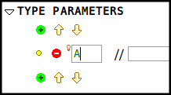
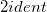

3.3 Add a Type Parameter
Type parameters in a theory specify the types on which new definitions and rules may be polymorphic. For instance, a theory of sequences can be polymorphic on one type and that is the type of elements it may hold.
Type parameters are similar in nature to carrier sets in contexts. To create a new type parameter, click on button  under the Type Parameters section of the structured editor, and specify the name of the type parameter (see Figure 6).
under the Type Parameters section of the structured editor, and specify the name of the type parameter (see Figure 6).

Figure 6: Type Parameters
Type parameters are expected to be a legal Event-B identifier. For example,  is not a legal identifier.
 As a convention, type parameters are specified as upper case strings (same as context’s carrier sets).
As a convention, type parameters are specified as upper case strings (same as context’s carrier sets).